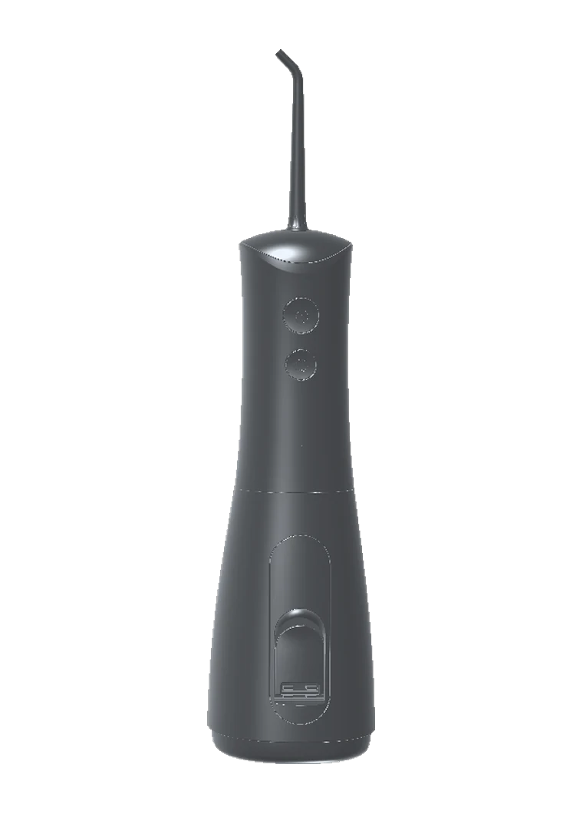

Water Flosser
Cordless, and built for the gumline — the part of your mouth a toothbrush was never designed to reach.
- Shipping
- Free. Dispatched within one working day, 2–4 days to arrive.
- Returns
- 30 days from delivery. We pay return postage.
- Warranty
- 2 years, parts and labour. Claimed online, not by phone.
- In the box
- Flosser, two nozzles, charging cable, technique guide.
Before you buy
It doesn't replace floss.
It reaches what floss can't.
String floss is better at the tight contact between two teeth. Water is better along and under the gumline, around brackets and permanent retainers, and between implants and crowns.
Used together they cover the whole mouth. If you're buying this expecting to throw your floss away, we'd rather tell you now.
The most common reason people abandon a water flosser is that it was sold to them as something it isn't.
How to use it
Three things decide whether this works for you.
Start on the lowest pressure
Lukewarm water. Build up over the first week rather than starting at maximum.
Trace the gumline at ninety degrees
Where the tooth meets the gum — not the flat face of the tooth. Pause briefly between each one. This single detail is the difference between it working and it seeming useless.
Lean over the sink, lips nearly closed
Let the water fall out as you go. Forty seconds, no mess.
The technique, shown
A short silent sequence covering nozzle angle, the path around the arch, and the pause between teeth.
Being produced from the product's engineering model. It will play on scroll, with a static fallback under reduced-motion settings.
Specification
Every number,
or an honest blank.
Where a figure is still being confirmed against the production unit, it says so. We'd rather show you a gap than a guess.
- Dimensions
- 69 × 76 × 215 mm
- Packaged
- 71 × 78 × 217 mm
- Colourways
- Black · Soft White
- Power
- Rechargeable, cordless
- Nozzles included
- 2
- Pressure settings
- To be confirmed
- Tank capacity
- To be confirmed
- Battery life
- To be confirmed
- Charge time
- To be confirmed
- Water resistance
- To be confirmed
- Noise level
- To be confirmed
- Weight
- To be confirmed
Who it's for
Some people notice the difference in a week.
Braces, aligners, retainers
Brackets, wires and bonded retainers trap what floss can't get around.
Implants, crowns, bridges
Margins and abutments that need cleaning without abrasion.
Gum pockets and recession
Where a dentist has asked you to clean below the gumline, or brushing harder is doing damage.
Also: tightly packed teeth that shred floss, wisdom-tooth gaps, and anyone whose grip makes floss awkward. If none of that is you and you floss well every day, you may not need one.
Questions
Before you decide.
Will I see bits of food come out?
Sometimes, sometimes not — and that isn't a sign it isn't working. Most of what it removes is soft plaque at the gumline, which you won't see. Judge it by how your gums look after two weeks.
Can I stop using string floss?
We'd rather you didn't. They do different jobs. If you genuinely won't floss, this is far better than nothing — but it isn't a straight swap.
My gums bleed. Should I stop?
Usually not — it's generally existing inflammation rather than damage, and it typically settles within one to two weeks. Start low. If it hasn't improved after two weeks, speak to your dentist.
Is it messy?
Only if you stand upright with your mouth open. Lean over the sink, lips almost closed. Everyone gets it within a couple of uses.
What if I don't get on with it?
Thirty days from delivery, we pay return postage, and you get a full refund. Use it properly for a few weeks first — that's what the window is for.
Who shouldn't use one?
Check with your dentist first if you have gum disease under active treatment, recent oral surgery, or a newly placed crown or implant. Not intended for young children.
Thirty days
to decide.
Free shipping, two-year warranty, and return postage on us if it isn't for you.

Also available in Soft White.